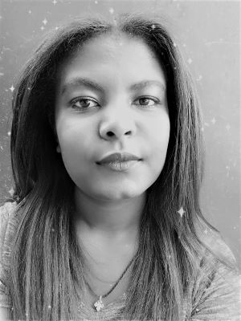

HANNA KEBEDE |
GALLARY |
ABOUT |
CONTACT |
|  | HANNA KEBEDESoftware Engineering Student | Addis Ababa | AAiTHi, my name is Hanna i am a software engineering student. I lived in Adama city which is 100km far from Addis. I also start learning there in HOLY ANGELS SHCOOL from grade 0 - grade 10. Then I continue my preparatory in ST.JOSEPH CATHOLIC SCHOOL. Now i am second year software engineering student in Addis Ababa institute of technology , I join this university in 2019. I choose software engineering department from other department is because i am rely interested about working in different programming languages and be the proffesional one. |